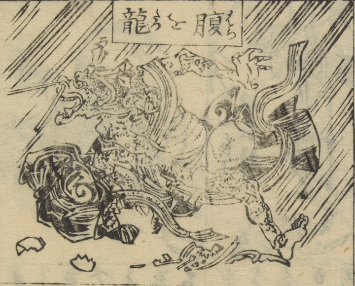

恐ろしい剣幕をした龍。雹を降らし、器物を破壊する。
著作者：万亭応賀著，河鍋暁斎画／出典：親書誌：U426_nichibunken_0457：和談三才図笑；ワダンサンサイズエ／日付：2025／資源識別子：U426_nichibunken_0457_0007_0001
Copyright (c)2010- International Research Center for Japanese Studies, Kyoto, Japan. All rights reserved.